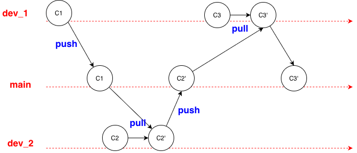
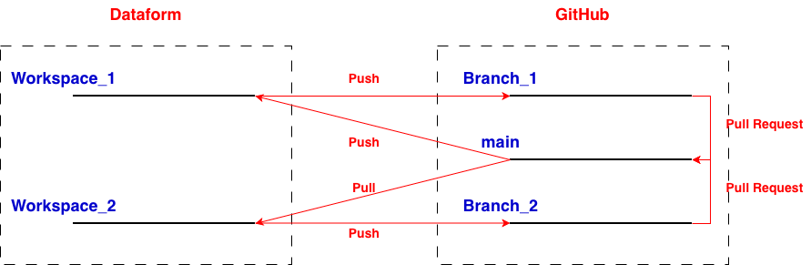

# create personal access token
1. Access prifile -> settings -> Developer Settings
2. Access Personal access tokens -> Tokens (classic)
3. Create a new personal access token with scope repo
4. Click Generate token
5. Copy the token
# store the classic token in Secret Manager
1. Access Google Cloud Secret Manager
2. Create Secret
3. Paste private key in value
4. Click Create Secret
# Give Dataform access to the secret
1. Edit Git Connection in Setting in the repository on Dataform
2. Add HTTPS url of the GitHub repo
3. Default branch is main
4. Select secret key as Secret
# generate SSH keys ssh-keygen -t ed25519 -f ./dataform_github -C "dataform-github" # add public key to GitHub repo 1. Access Setting in the repo 2. Access Deploy keys 3. Add deploy key and paste public key 4. Allow write acces 5. Add key # save private key to in Secret Manager 1. Access Google Cloud Secret Manager 2. Create Secret 3. Paste private key in value 4. Click Create Secret # Give Dataform access to the private key 1. Edit Git Connection in Setting in the repository on Dataform 2. Add SSH url of the GitHub repo 3. Default branch is main 4. Select secret key as Secret 5. Add GitHub's SSH public host key
